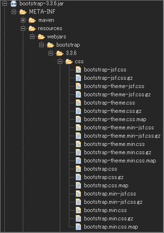
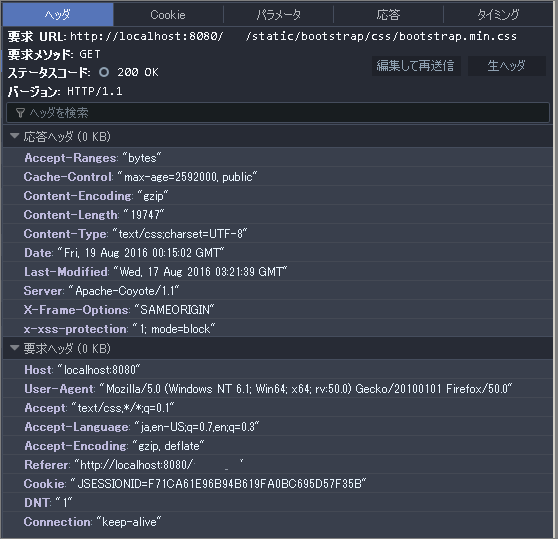

WebJarsの利用 (XML 版)
2016.08.22 記入
SpringBoot + gradle 版はWebJarsの利用 を参照。
WebJars 自体の説明も合わせて参照してください。
検証環境
- Spring Framework 4.3.2.RELEASE
- JSTL 1.2 (View)
- Eclipse Neon Release (4.6.0)
- Maven(Eclipse plug-in : m2e - Maven 1.7.0.20160603-1933)
Example WebJars Maven
Bootstrap と jQuery を WebJars として利用をする場合。
（合わせてバージョン番号の隠蔽も同時に利用します。）
webjars-locator, bootstrap, jquery の依存関係を追加します。
- pom.xml(依存関係の追加のみ):
<dependency> <groupId>org.webjars</groupId> <artifactId>webjars-locator</artifactId> <version>0.32</version> </dependency> <dependency> <groupId>org.webjars</groupId> <artifactId>bootstrap</artifactId> <version>3.3.6</version> </dependency> <dependency> <groupId>org.webjars</groupId> <artifactId>jquery</artifactId> <version>2.2.4</version> </dependency>
静的リソースのアクセス定義を行う(Spring MVC XML 定義)
- mvc-config.xml:
<?xml version="1.0" encoding="UTF-8"?>
<beans xmlns="http://www.springframework.org/schema/beans"
xmlns:xsi="http://www.w3.org/2001/XMLSchema-instance" xmlns:context="http://www.springframework.org/schema/context"
xmlns:mvc="http://www.springframework.org/schema/mvc" xmlns:tx="http://www.springframework.org/schema/tx"
xmlns:util="http://www.springframework.org/schema/util"
xsi:schemaLocation="
http://www.springframework.org/schema/mvc http://www.springframework.org/schema/mvc/spring-mvc-4.3.xsd
http://www.springframework.org/schema/beans http://www.springframework.org/schema/beans/spring-beans-4.3.xsd
http://www.springframework.org/schema/context http://www.springframework.org/schema/context/spring-context-4.3.xsd
http://www.springframework.org/schema/tx http://www.springframework.org/schema/tx/spring-tx-4.3.xsd
http://www.springframework.org/schema/util http://www.springframework.org/schema/util/spring-util-4.3.xsd">
<!--・・・ 省略 -->
<mvc:resources mapping="/static/**" location="/webjars/"> <!-- 1 -->
<mvc:cache-control cache-public="true" max-age="2592000" /> <!-- 2 -->
<mvc:resource-chain resource-cache="true"> <!-- 3 -->
<mvc:resolvers>
<bean class="org.springframework.web.servlet.resource.GzipResourceResolver" /> <!-- 4 -->
</mvc:resolvers>
</mvc:resource-chain>
</mvc:resources>
<!--・・・ 省略 -->
</beans>既存の定義ファイルに追加します。
- webjars <- static としてアクセスします。
- 全体のキャッシュを有効 max-age：有効期間(秒単位)の設定
- リソースのキャッシュを有効
- Gzip 化された静的リソースへのアクセス
WebJars を テンプレートエンジン(JSTL)からの利用方法
- JSTL:
<%@ taglib prefix="c" uri="http://java.sun.com/jsp/jstl/core" %>
<%@ taglib prefix="form" uri="http://www.springframework.org/tags/form" %>
<%@ page language="java" contentType="text/html; charset=UTF-8" pageEncoding="UTF-8"%>
<%-- ・・・ 省略-->
<link type="text/css" rel="stylesheet" href="<c:url value='/static/bootstrap/css/bootstrap.min.css'/>"/>
<script type="text/javascript" src="<c:url value='/static/jquery/jquery.min.js'/>"></script>
<script type="text/javascript" src="<c:url value='/static/bootstrap/js/bootstrap.min.js'/>"></script>
<%-- ・・・ 省略-->
参考
Gzip 化された静的リソースの例：bootstrap の webjars

Gzip 化された静的リソースへのアクセスヘッダー 